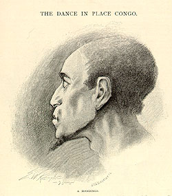
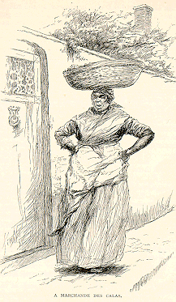
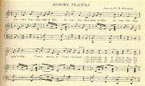
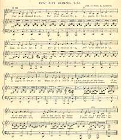

|
[Just after the tour ended Cable wrote two articles for The Century Magazine that provide a way to "hear" the slave songs he sang as well as the kind of things he said to introduce and explain them to a bourgeois audience in the various northern cities visited by the tour. I haven't tried to recreate Cable's voice, but clicking on the pages of sheet music will let you see the way the songs were scored. Both the musical notation and the illustrations (by E. W. Kemble, the man MT hired to illustrate Huck Finn) are from the original Century articles.] |
|
The Century
Magazine Feburary 1886  from The Dance in Place CongoThe Place Congo, at the opposite end of the street, was at the opposite end of everything. One was on the highest ground; the other on the lowest. The one was the rendezvous of the rich man, the master, the military officer--of all that went to make up the ruling class; the other of the butcher and baker, the raftsman, the sailor, the quadroon, the painted girl, and the negro slave. No meaner name could be given the spot. The negro was the most despised of human creatures and the Congo the plebian among negroes. The white man's plaza had the army and navy on its right and left, the court-house, the council-hall and the church at its back, and the world before it. The black man's was outside the rear gate, the poisonous wilderness on three sides and the proud man's contumely on its front. Before the city overgrew its flimsy palisade walls, and closing in about this old stamping-ground gave it set bounds, it was known as Congo Plains. There was wide room for much field sport, and the Indian villagers of the town's outskirts and the lower class of white Creoles made it the ground of their wild game of raquette. Sunday afternoons were the time for it. Hence, beside these diversions there was, notably, another. The hour was the slave's term of momentary liberty, and his simple, savage, musical and superstitious nature dedicated it to amatory song and dance tinctured with his rude notions of supernatural influences.  There were other dances. Only a few years ago I was honored with an invitation, which I had to decline, to see danced the Babouille, the Cata (or Chacta), the Counjaille, and the Calinda. Then there were the Voudou, and the Congo, to describe which would not be pleasant. The latter, called Congo also in Cayenne, Chica in San Domingo, and in the Windward Islands confused under one name with the Calinda, was a kind of Fandango, they say, in which the Madras kerchief held by its tip-ends played a graceful part. The true Calinda was bad enough. In Louisiana, at least, its song was always a grossly personal satirical ballad, and it was the favorite dance all the way from there to Trinidad. To dance it publicly is not allowed this side the West Indies. All this Congo Square business was suppressed at one time; 1843, says tradition. The Calinda was a dance of multitude, a sort of vehement cotillion. The contortions of the encircling crowd were strange and terrible, the din was hideous. One Calinda is still familiar to all Creole ears; it has long been a vehicle for the white Creole's satire; for generations the man of municipal politics was fortunate who escaped entirely a lampooning set to its air. In my childhood I used, at one time, to hear, every
morning, a certain black marchande des
calas--peddler-woman selling rice croquettes--chanting
the song as she moved from street to street at the sunrise
hour with her broad, shallow, laden basket balanced on her
head. The number of stanzas has never been counted; here are a few of them. "It was in a stable that they had this gala night," says the song; "the horses there were greatly astonished. Preval was captain; his coachman, Louis, was master of ceremonies. There were negresses made prettier than their mistresses by adornments stolen from the ladies' wardrobes (armoires). But the jailer found it all so funny that he proposed to himself to take an unexpected part; the watchmen came down"--"Dans l'equirie la 'y' avé grand gala; No official exaltation bought immunity from the jeer of the Calinda. Preval was a magistrate. Stephen Mazureau, in his attorney-general's office, the song likened to a bull-frog in a bucket of water. A page might be covered by the roll of victims. The masters winked at these gross but harmless liberties and, as often as any others, added stanzas of their own invention.  The Calinda ended these dissipations of the summer Sabbath afternoons. They could not run far into the night, for all the fascinations of all the dances could not excuse the slave's tarrying in public places after a certain other bou-djoum! (that was not of the Calinda, but of the regular nine-o'clock evening gun) had rolled down Orleans street from the Place d'Armes; and the black man or woman who wanted to keep a whole skin on the back had to keep out of the Calaboose. Times have changed, and there is nothing to be regretted in the change that has come over Congo Square. Still a glamour hangs over its dark past. There is the pathos of slavery, the poetry of the weak oppressed by the strong, and of limbs that danced after toil, and of barbaric love-making. The rags and semi-nakedness, the bamboula drum, the dance, and almost the banjo, are gone; but the bizarre melodies and dark lovers' apostrophes live on; and among them the old Counjaille song of Aurore Pradère
Mr. Ware and his associate compilers have neither of these stanzas, but one very pretty one; the third in the music as printed here, and which we translate as follows:
The Century Magazine from Creole Slave Songs"Poor little Miss Zizi!" is what it means--"She has pain, pain in her little heart." "À li" is simply the Creole possessive form; "corps à moin" would signify simply myself. Calalou is wearing a Madras turban; she has on an embroidered petticoat; [they tell their story and] Zizi has achings in her heart. And the second stanza moralizes: "When you wear the chain of love"--maybe we can make it rhyme: Bid all happiness good-bye." |
||||||||||||||